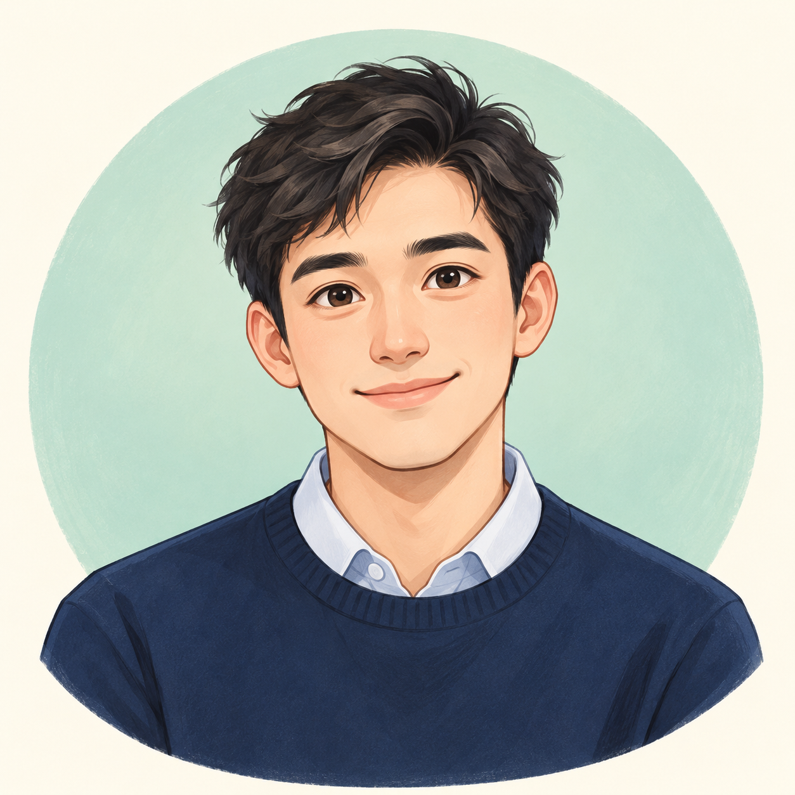

人工智能教育AI in Education
关注人工智能在教学与学习中的应用，探索技术如何支持教育。
Exploring how AI can support teaching, learning, and educational practice.
医学 · 教育 · 人工智能Medicine · Education · AI
深圳大学 · 教育学部 · 硕士研究生Master’s student · Faculty of Education · Shenzhen University
从医疗技术出发，探索人工智能在教育与医疗中的应用。Bringing a background in medical technology to the study of AI in education and healthcare.

你好，我是蒙洋，目前在深圳大学教育学部攻读人工智能方向硕士学位。本科就读于宁夏医科大学医学信息与工程学院，专业为医疗技术，具有医疗人工智能与超声技术相关背景。目前，我主要关注人工智能教育、情感分析与医学图像处理，希望结合医学背景与人工智能方法，探索教育和医疗健康领域的交叉应用。
Hi, I’m Yang Meng, a master’s student focusing on Artificial Intelligence at the Faculty of Education, Shenzhen University. I studied Medical Technology at the School of Medical Information and Engineering, Ningxia Medical University, with a background in medical AI and ultrasound technology. My current interests include AI in education, sentiment analysis, and medical image processing. I aim to connect my medical background with AI methods to explore applications across education and healthcare.
关注人工智能在教学与学习中的应用，探索技术如何支持教育。
Exploring how AI can support teaching, learning, and educational practice.
关注情感信息的识别与理解，探索人工智能对情感表达的分析。
Studying how AI can recognize and interpret sentiment and emotional expression.
结合医疗技术背景，关注医学图像的处理、分析与智能理解。
Connecting medical technology with AI for processing and understanding medical images.
教育学部 · 人工智能方向 · 硕士研究生
Faculty of Education · Artificial Intelligence · Master’s student
医学信息与工程学院 · 医疗技术 · 本科
School of Medical Information and Engineering · Medical Technology · Bachelor’s degree
相关背景：医疗人工智能、超声技术Background in medical AI and ultrasound technology
学术成果将在此更新。Publications and research updates will be shared here.